NT Records
A gravadora do grupo Novo Traço: o traço da marca-mãe ganha tinta spray, textura urbana e um grid que dá solidez.
- Cliente
- Novo Traço
- Ano
- 2026
- Papel
- Direção de arte
- Escopo
- Símbolo, identidade visual, papelaria, merch e digital
Propósito e linguagem
Existir para que a música que nasceu no palco e no estúdio da Novo Traço continue acessível depois da luz apagar, na escala que o tempo longo exige.
A gravadora mantém o traço do grupo, mas troca o pincel e a caneta pela tinta spray, para ganhar urbanidade e textura. Linhas retas funcionam como grid estruturante e trazem a seriedade de uma marca sólida.
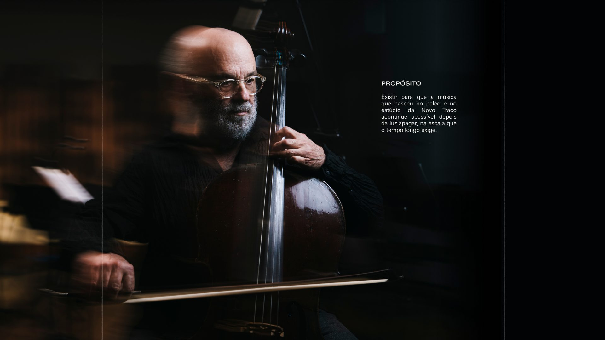
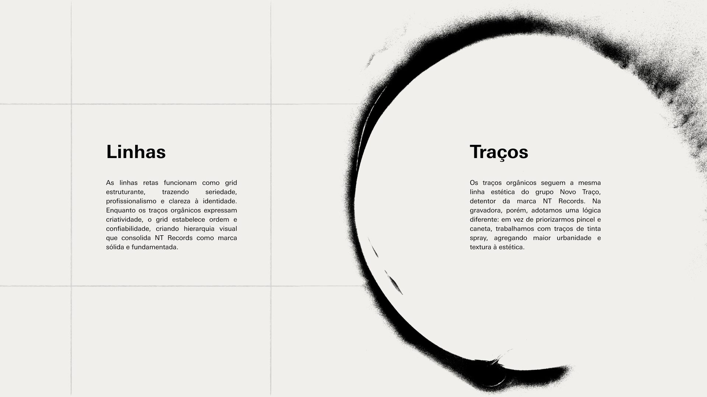
Cor e tipografia
Uma paleta enxuta, de preto, azul e branco, equilibra autoridade e confiança, e deixa o traço de spray como protagonista. A Univers Next Pro sustenta toda a tipografia: a mesma família da marca-mãe, usada aqui com mais rigor e menos contraste de pesos.
-
My Soul
- HEX
- #020305
- RGB
- 2 3 5
-
Azul Records
- HEX
- #003AE7
- RGB
- 0 58 231
-
Cloud Dancer
- HEX
- #F0EFEB
- RGB
- 240 239 235
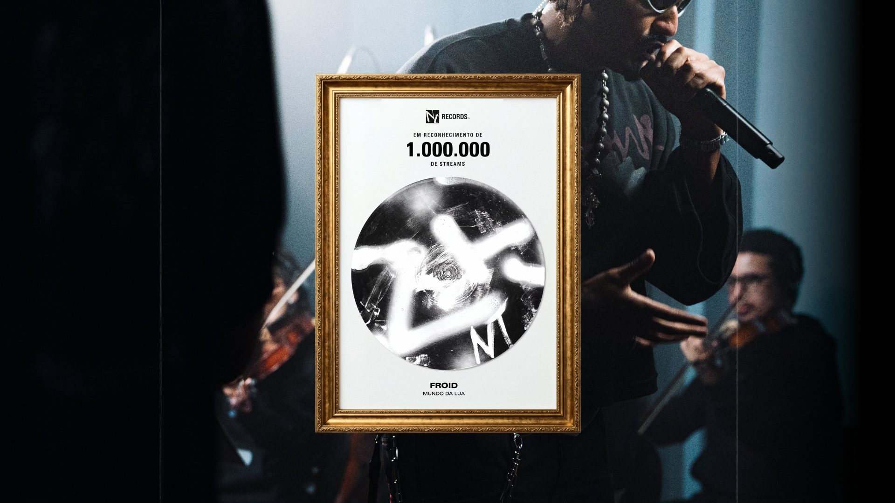
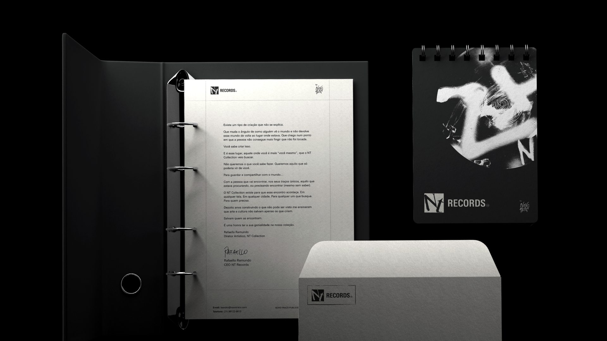
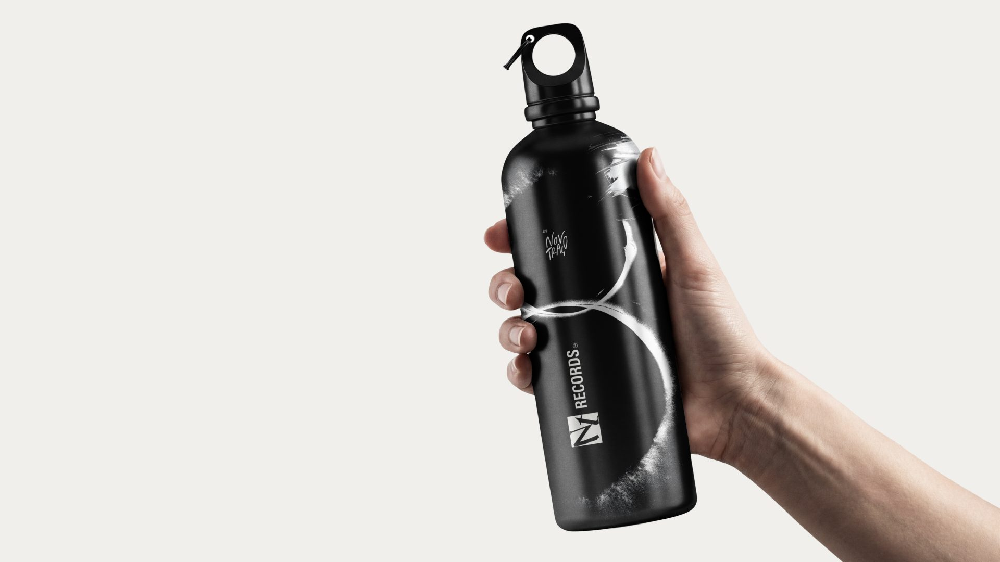
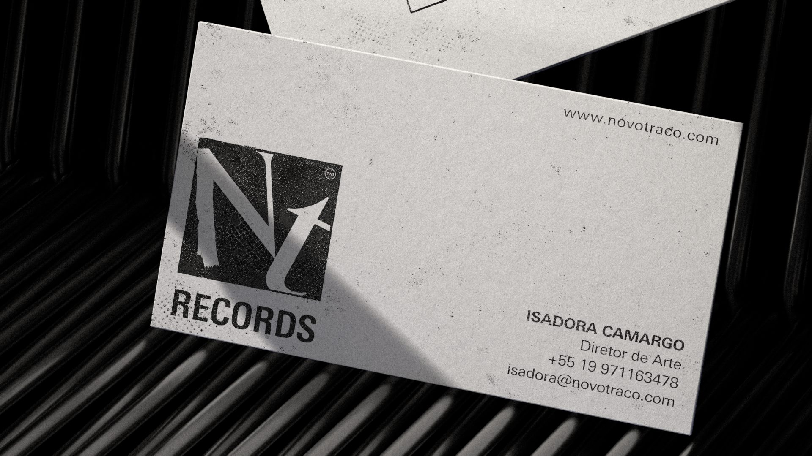
Merch
A linha de produtos leva o traço de spray para o vestuário e os acessórios. O disco pintado vira estampa grande nas costas da camiseta e na ecobag, enquanto o hoodie e a garrafa assinam com mais discrição, só com o símbolo e o traço.
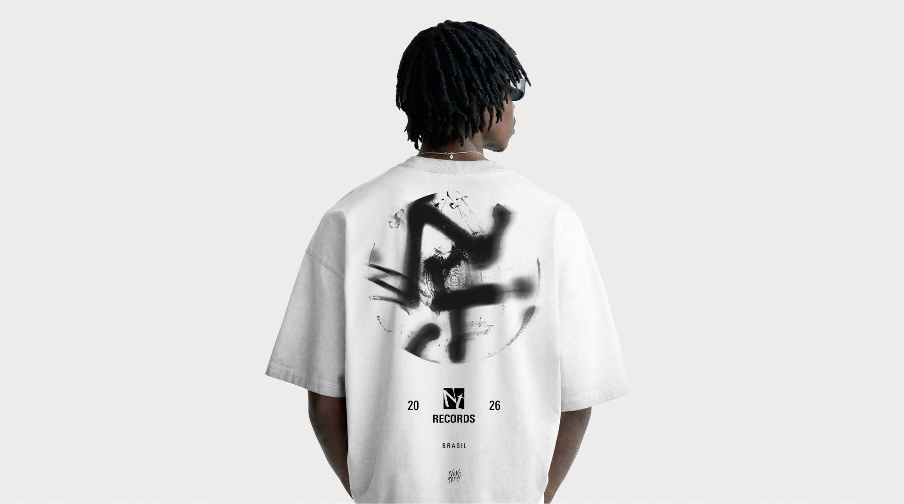
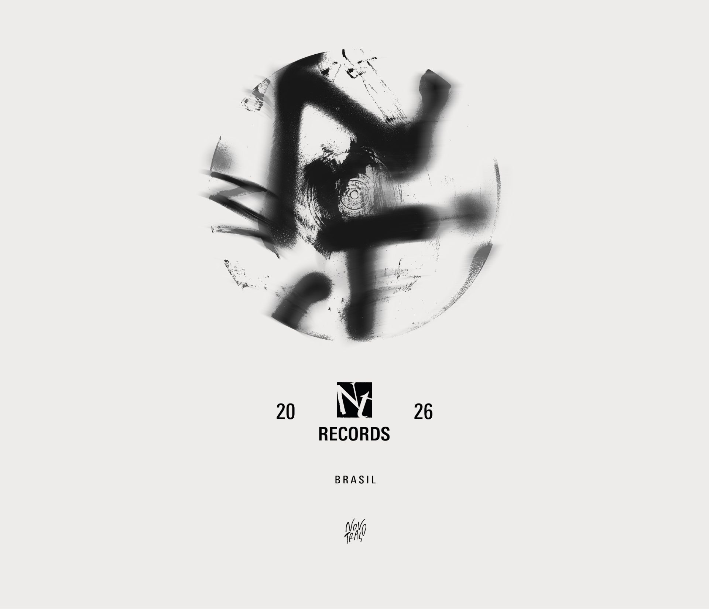
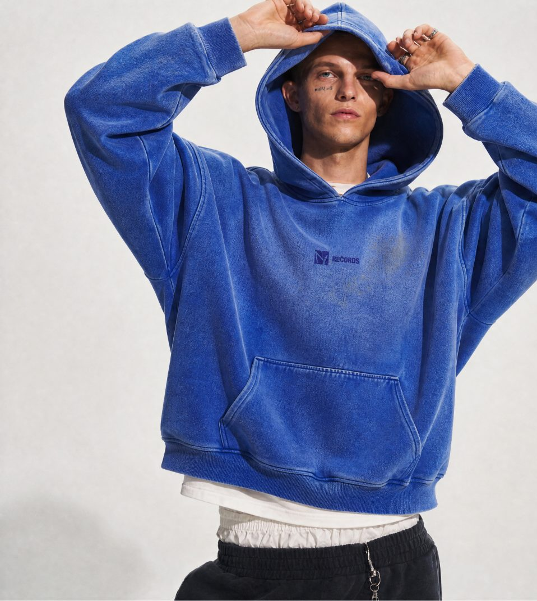
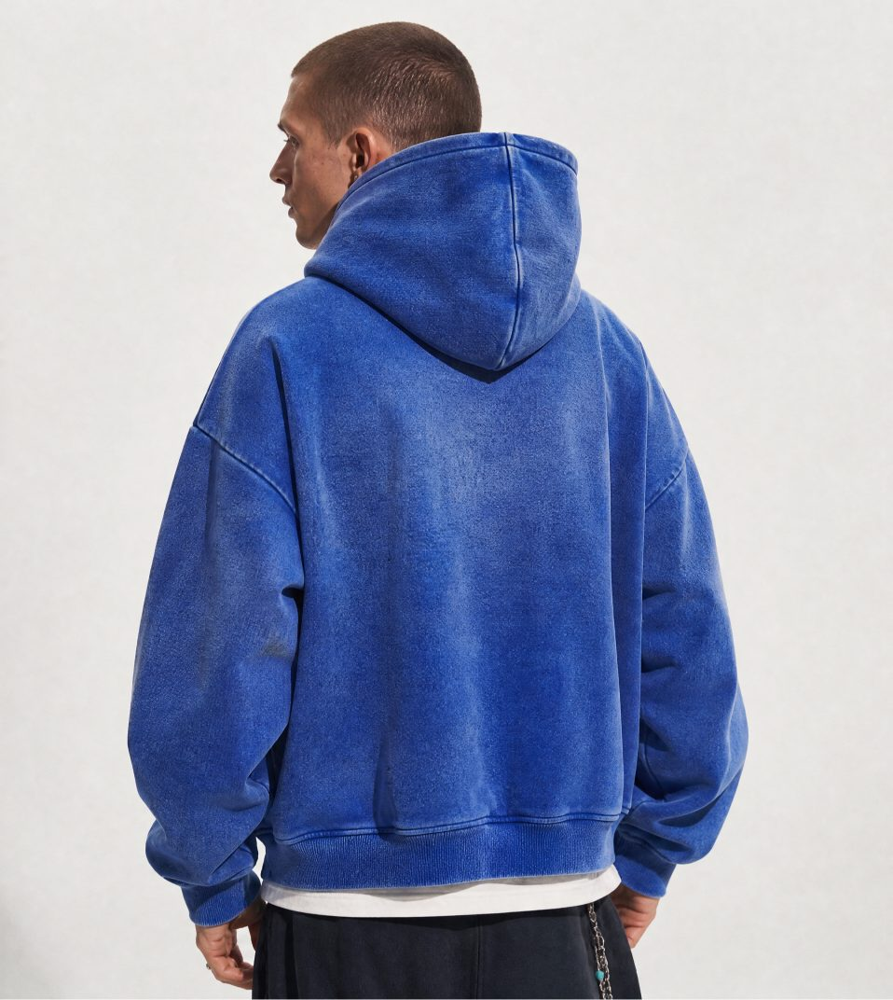
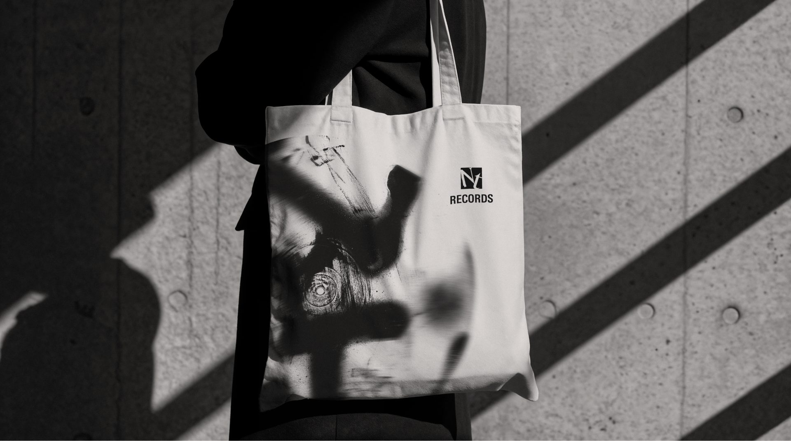
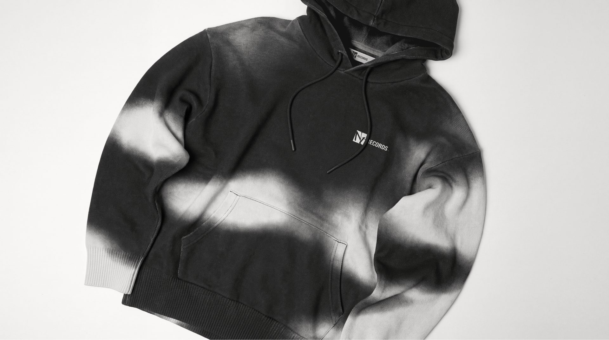
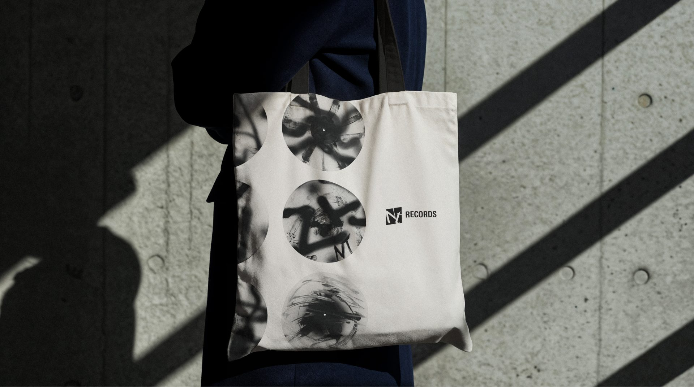
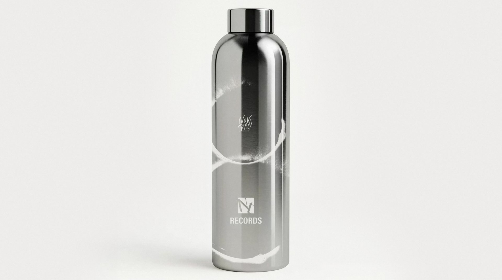
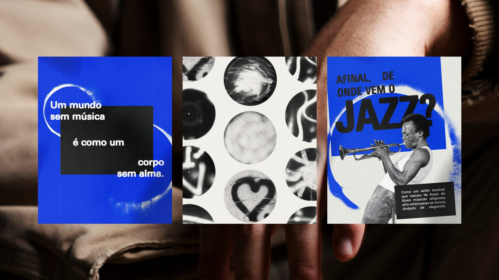
No ecossistema
A NT Records é a submarca do grupo Novo Traço dedicada a lançar e manter vivo o catálogo dos artistas. Ela herda o traço do grupo e o assina com "by Novo Traço", mas tem voz própria, mais urbana e mais institucional ao mesmo tempo.